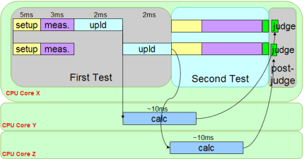

SmartCalc framework
Today's system controller with multiple cores allow parallel execution of various tasks. The SmartCalc (SMC) framework allows you utilizing these resources to minimize the test time. The framwork provides the ability to move time consuming calculations and uploads of test data into separate background threads. These "hidden" threads run as far as possible in parallel to the foreground process of SmarTest.
The ability to use multithreading follows the constant drive of the system controller manufacturers to produce multi-core, multi-CPU computers for technological and other number-crunching applications of today's world.

Multithreading is a form of parallel processing based on the architecture of the system controller that controls the test system. Independent threads can be executed in parallel on different CPU cores. This reduces test time and improves multisite efficiency. Unfortunately, the usage of threads is not very user friendly. It requires major changes in coding and test flow.
The purpose of SmartCalc is to overcome these limitations by providing high-level API commands. Through SmartCalc, the following can be achieved:
- Ease of use, minimum impact on test code and program flow
- Parallel (multithreaded) calculation for different sites
- Automatic scaling with multi-site
- Hiding of calculation and data upload with delayed binning
- Minimum overhead and maximum multisite efficiency
- Automatic assignment of threads and CPU cores
This chapter provides some background information to multithreading followed by a high level view of SmartCalc's API implementation into the test program.
Functional changes
- Introduced in SmarTest 6.5.3